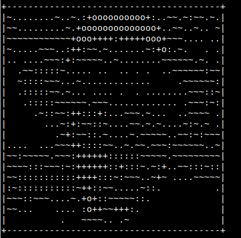
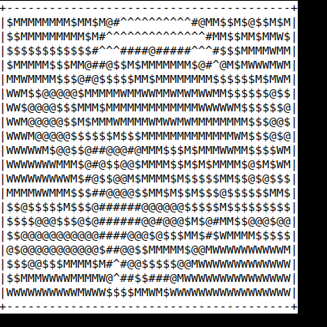
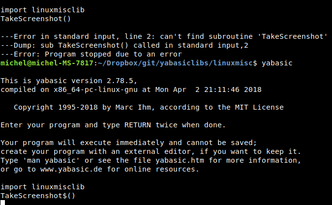

linuxmisclib.yab
A yabasic library (c) Michel Clasquin-Johnson 2018.
Licensed according to the MIT license.
If you are reading this as a man page, be advised that you can see it in glorious HTML, with pictures even, at https://clasqm.github.io/
This library for yabasic allows the use of a variety of common Linux commands in text mode. For example, opening a text file in the nano text editor will make it unnecessary for you to write your own text editing routine.
This library also contains some routines ported from my libraries originally developed under yab for Haiku.
These routines make heavy use of system() and system$() commands, and some write temporary files, work on them, and read them back. They. will. slow. your. programs. down. a. lot. Also, ensuring that you (or your users) have the appropriate packages installed will be up to you. The routines themselves only check for the existence of the binary and exit with an error message if it is not found. All I can tell you is that every utility used here was found in the Debian/Ubuntu repositories. apt-cache search is your friend.
All routines are case-sensitive.
Developed on elementary OS 0.4 "Loki" and Lubuntu 18.04 (i.e. Linux), but it should work on any system that will run both yabasic and the command in question.
The yabasic I use for development is version 2.78.5, compiled and installed from source obtained at www.yabasic.de.
The library should exist either in the same folder as your program (symlinks work, but if you have trouble with binding, just copy the library, it is not THAT big!) or in the standard yabasic library location on your system.
To use the library, use the command
import linuxmisclib
before you start using any of the routines.
See the file test.bas for test routines that will show examples of how to use these routines.
If you would rather cut and paste these subroutines into your own program rather than importing this rather large library, or create your own, smaller library with just the routines you need, be my guest (I would appreciate a note of acknowledgement in your code). But some subroutines require supporting routines that you will find at the end of this library. You will have to include those as well.
It is safe to use this library and ONE of the others in this set that provide dialogs concurrently,
Routines available:
NOTE: All routines with the form ConvertXXX$(), OpenXXX$() or OpeninXXX$(), and most others that use external commands, will return an empty string if successful or a warning message if the required program is missing. The warning message will only be displayed if you do something like:
print OpeninTpp$("file.tpp")
(assuming tpp is not installed). Or you can test for its presence like this:
if OpeninTpp$("file.tpp") <> "" {do something}
- Quick Index
- ArraySort(a()), ArraySort$(a$()) - sorts a ONE-dimensional array.
- ConvertFile$(infile$, outfile$) - Convert any text file format that pandoc can handle.
- ConvertFile2PDF$(infile$, outfile$) - Convert any text file format that pandoc can handle to PDF.
- ConvertFile2String$(infile$) - Convert any text file format that pandoc can handle to text.
- ConvertImage(inputfile$, outputfile$) -
- CowSay(text$) - Returns a text spoken by a randomized ASCII cartoon.
- Define$(word$) - Get a dictionary definition of a word.
- DistroDetails$() - Return your distro's and computer's stats .
- DistroLogo$() - Return your distro's logo in monochrome ASCII art format.
- EncloseString$(thestring$,type) - Enclose a string in either single or double quotes, if it isn't already.
- FileDedupe$(infile$,outfile$) - Remove duplicate lines from a text file infile$ and write the results to outfile$.
- FileExists(fullpathname$) - Test if a file exists.
- FileorDir(fullpathname$) - Test if a file (in the Unix sense) is a regular file or a directory.
- FileorLink(fullpathname$) - Test if a file (in the Unix sense) is a regular file or a symbolic link.
- FileSort$(infile$,outfile$) - Sort a text file infile$ and write the results to outfile$.
- GetEnvVar$(var$)
- IsFileZeroByte(pathname$) - determines if a passed filename is a zero-byte file.
- IsItATextFile(filename$) - Tests whether a given file is a text file or not.
- KillPlay() - Stops any multimedia files currently playing.
- MakeAsciiArt$(img$, width) - Convert an image file to monochrome ASCII art.
- NotifyDlg(text$, duration, block) - Pop up a one-line notification.
- OpenAbook$() - Opens the abook text-mode contact manager.
- OpenCalcurse$() - Opens the calcurse text-mode calendar app.
- OpenGtypist$() - Open the gtypist tying tutor program.
- OpenHnb$() - Open the hnb hierarchical notebook.
- OpenInDav$(filename$) - opens a given text file in the dav text editor.
- OpeninDhex$(filename$) - opens a given file in the dhex hexadecimal editor
- OpeninElinks$(URL$}: Opens a URL in the elinks text-based browser.
- OpeninFbless$(file$) - Opens a .FB2 ebook in the fbless ebook reader
- OpeninHte$(filename$) - opens a given file in the hte hexadecimal editor
- OpeninHexcurse$(filename$) - opens a given file in the hexcurses hexadecimal editor
- OpenInJed$(filename$) - opens a given text file in the jed text editor.
- OpeninLinks$(URL$): Opens a URL in the links text-based browser.
- OpeninLynx$(URL$): Opens a URL in the lynx text-based browser.
- OpenInNano$(filename$) - opens a given text file in the nano text editor.
- OpenInSc$(filename$) - opens a given text file in the sc spreadsheet.
- OpenInTilde$(filename$) - opens a given text file in the tilde text editor.
- OpenInTpp$(filename$) - Opens a given file in the tpp text presentation program.
- OpeninTweak$(filename$) - opens a given file in the tweak hexadecimal editor
- OpeninW3m$(URL$): Opens a URL in the w3m text-based browser.
- OpeninWordgrinder$(filename$) - Opens a given file in the wordgrinder word processor.
- OpenNinvader$() - start the ninvaders game (Space Invaders clone)
- OpenPacman$() - Start the pacman4console game (pacman clone)
- OpenSpeedpad$() - Opens the speedpad typing speed checker.
- OpenTig$(gitdir$) - Opens the tig CLI UI for git.
- OpenTina$() - Opens the tina text-based personal information manager.
- PlayMP3$(file$) - Plays an audio (.mp3, m4a, etc) file.
- PlayVideo$(file$) - Plays a video file (.mp4, .mov etc.)
- PlayWav$(file$) - Plays a .wav sound file.
- PrintFiglet$(font$, text$) - Print text$ in the figlet font font$.
- PrintToilet$(font$, text$) - Print text$ in the toilet font font$
- RandInt0To9() - output a random integer between 0 and 9, inclusive.
- ReplaceinArray$(w$(),instring$,outstring$) - Globally replace all occurences of instring$ in a one-dimensional string array with outstring$.
- ReplaceinFile(infilename$,instring$,outstring$, outfilename$) - Globally replace all occurences of instring$ in the file infilename$ with outstring$ and writes the results to outfilename$.
- ReplaceinLine$(line$,instring$,outstring$) - Globally replace all occurences of instring$ in the string line$ with outstring$.
- Screensaver(onoff, type) - Starts or halts the termsaver text-based screensaver application.
- ScreensaverCC(onoff,type) - Starts or halts the CacaLib screensaver applications.
- ScreensaverClock() - starts the tty-clock program in screensaver mode.
- SelectDir$(startpath$) - Use the ranger file manager to select a directory.
- SelectFile$(startpath$) - Use the ranger file manager to select a file.
- SelectMulltiFile$(startpath$) - Use the ranger file manager to select a a bunch of files.
- StripDoc$(filename$) - Convert a Microsoft Word .doc (NOT .docx) file to text and return the result as a string variable.
- StripLFoffSysCmd$(val$) - Remove linefeeds from the results of a system call.
- StripPDF$(filename$) - Convert a PDF or PS file to text and return the result as a string variable.
- TakeScreenshot$(type, thumb, filename$) - Takes a screenshot.
- TestForUtility$(filename$), TestForUtility(filename$) - tests whether a given utility exists on your $PATH and is executable.
- URLExist(URL$) and URLExist$(URL$) do the equivalent job of testing whether a URL exists before sending it to OpeninLinks(), for example.
- WhereAmI$() - returns the current directory from which the program is running.
- WikipediaDump$(searchterm$, language$) - Search wikipedia for a specific string, convert the article to text and return it as a string variable.
- WikipediaURL$(searchterm$, language$) - Search wikipedia for a specific string, and return the URL as a string variable.
ArraySort(a()) - sorts a ONE-dimensional numeric array.
- Do not try a() = ArraySort(a()), it won't work.
- Your array should be global - I have had inconsistent results with local arrays.
- If you prefer, you can use the alias SortArray().
- System commands used: sort, rm.
ArraySort$(a$()) - sorts a ONE-dimensional string array (case-independent).
- Do not try a$() = ArraySort$(a$()), it won't work.
- Your array should be global - I have had inconsistent results with local arrays.
- If you prefer, you can use the alias SortArray$().
- System commands used: sort, rm.
ConvertFile$(infile$, outfile$) - Convert any text file format to any other format that pandoc ( http://pandoc.org ) can handle.
- Make sure that your two filenames have the correct extension added, then pandoc will almost always get it right.
- Example: ConvertFile$("myfile.md", "myfile.docx") will convert a Markdown file to Microsoft .docx format (it does not delete the original file).
- NOTE 1: PDF output requires pdflatex or wkhtmltopdf to be installed as well as pandoc. Rather use ConvertFile2PDF() for that.
- NOTE 2: Also, avoid RTF format output. Pandoc's version of this format seems nonstandard.
- System commands used: pandoc.
ConvertFile2PDF$(infile$, outfile$) - Convert any text file format that pandoc ( http://pandoc.org ) can handle to PDF.
- Make sure that your infile's name has the correct extension added, and that your outfile's name ends with .pdf, then pandoc will almost always get it right.
- Example: ConvertFile2PDF$("myfile.md", "myfile.pdf") will convert a Markdown file to pdf format.
- System commands used: pandoc, wkhtmltopdf
ConvertFile2String$(infile$) - Convert any text file format that pandoc ( http://pandoc.org ) can handle to text.
- Make sure that your filename has the correct extension, then pandoc will almost always get it right.
- Example: Let a$ = ConvertFile2String$("myfile.md") will convert a Markdown file and return the result as the string variable a$. Unlike ConvertFile$(), this routine will NOT write an output file.
- System commands used: pandoc.
ConvertImage(inputfile$, outputfile$) -
Convert an image file to a different format, optionally with a different filename.
- This routine will work with either Graphics magic OR Image magic.
- If both are installed, Graphics magic takes precedence.
- The output format is taken from the file extension.
- The original file is left untouched.
- Returns 1 for success and 0 for failure
- System commands used: gm or convert.
CowSay(text$) - Returns a text spoken by a randomized ASCII cartoon.
- Both the character and the facial expression are randomized.
- if text$ is set as "fortune" then a random short fortune will be selected. Otherwise, the text you gave is printed.
- System commands used: cowsay, fortune.
- Example:
print CowSay$("fortune")
sleep 1
print CowSay$("This is some other text, not a fortune")

Define$(word$) - Get a dictionary definition of a word.
- This requires the installation of the dict program AND at least one dict dictionary, for example dict-gcide.
- The more dictionaries you add, the more results you can expect.
- This command searches localhost only and does not go online to dict.org.
- System commands used: dict.
DistroDetails$() - Return your distro's and computer's stats .
- System commands used: screenfetch.
- Example:
print DistroDetails$()

DistroLogo$() - Return your distro's logo in monochrome ASCII art format.
- System commands used: screenfetch.
- Example:
print DistroLogo$()

EncloseString$(thestring$,type) - Enclose a string in either single or double quotes, if it isn't already.
FileDedupe$(infile$,outfile$) - Remove duplicate lines from a text file infile$ and write the results to outfile$.
- Any existing outfile$ will be overwritten!
- Will fail if infile$ and outfile$ are identical.
- For best results your filename should be enclosed in single quotation marks so that it will not get confused by spaces. This routine will not check for that.
- If you prefer, you can use the alias DedupeFile$().
- Returns nothing.
- System commands used: awk.
FileExists(fullpathname$) - Test if a file exists.
- Returns 1 if the file exists, or returns 0 if the file does not exist.
- If only a filename is given, only the program's local directory will be searched.
- But you can also give a full pathname.
- System commands used: none.
FileorDir(fullpathname$) - Test if a file (in the Unix sense) is a regular file or a directory.
- Returns
- 1 if it is a directory,
- 0 if it is just a regular file.
- System commands used: test.
FileorLink(fullpathname$) - Test if a file (in the Unix sense) is a regular file or a symbolic link.
- Returns
- 1 if it is a link,
- 0 if it is just a regular file.
- This does NOT test for hard links.
- System commands used: test.
FileSort$(infile$,outfile$) - Sort a text file infile$ and write the results to outfile$.
- Any existing outfile$ will be overwritten!
- Will fail if infile$ and outfile$ are identical.
- For best results your filename should be enclosed in single quotation marks so that it will not get confused by spaces. This routine will not check for that.
- If you prefer, you can use the alias SortFile$().
- Returns nothing if succesful, otherwise returns an error message.
- System commands used: sort.
GetEnvVar$(var$)
- Get an environment variable
- Shortcut to peek$("env", "NAME")
- Do not precede the value var$ with the $ character as you would do in bash.
- Inspired by a library by Martin Medvold
- Example: *a$ = GetEnvVar$("PATH")
IsFileZeroByte(pathname$) - determines if a passed filename is a zero-byte file.
- Returns
- 0 (false) if the passed variable is larger than zero bytes,
- 1 (true) if it is zero bytes in size
- note that this reverses the output of the test -s command.
- Caution: will also return 1 if file does not exist: test for that with FileExists first.
- It will also return 0 if file is actually a directory: test for that with FileorDir first.
- If the file given is a symlink, this routine will report on the real, linked file.
- This yabasic routine is incompatible with a similar routine I wrote for yab. If you program in both languages, you need to reverse the conditions.
- System commands used: test.
IsItATextFile(filename$) - Tests whether a given file is a text file or not.
- Anything that does not have the string "text" in the results of the file command is assumed to be a binary file. This should work fine on Linux but may be problematic on BSD systems (including MacOS?) where this command may reject shell scripts.
- If you need something more powerful than file, I suggest you install enca.
- System commands used: file.
KillPlay() - Stops any multimedia files currently playing.
- Stops playing of multimedia files if they use either ffplay or aplay, such as files launched with
- PlayMP3(),
- PlayVideo() or
- PlayWav().
- Please note that this is a nuclear option: it will also affect any other programs making use of these utilities.
- System commands used: pkill.
MakeAsciiArt$(img$, width) - Convert an image file to monochrome ASCII art.
- The value img$ can be a path to a local file or a URL.
- Width default is set to 75 columns to work with most terminals, but you can override this with the optional value width.
- MakeAsciiArtInvert$(img$, width) is the same as MakeAsciiArt$(), but inverts the character map. Depending on your terminal and image this can make the image clearer (or a lot worse).
- It is a good idea to run FileExists(img$) first: Ruby error messages are not pretty.
- Returns a string containing the asciiart image. Within this string, individual lines are demarcated by linefeeds ("\n"). See the code for how to deconstruct this into an array for further manipulation.
- System commands used: asciiart.
- Examples:
print MakeAsciiArt$("./imgs/MCJ.jpg", 40)

print reverse MakeAsciiArtInvert$("./imgs/MCJ.jpg", 40)

- NotifyDlg(text$, duration, block) - Pop up a one-line notification.
- If duration is 0, the notification remains on screen until right-clicked, and displays an [X] button to mark the fact.
- Otherwise, there is no button and the notification disappears after the specified number of seconds.
- If block equals 0 the notification will launch in a new process and your yabasic program can continue.
- If block equals 1, your app will pause until the popup disappears.
- Keep your notifications short - you don't have much space to play with.
- Returns nothing
- System utility used: dzen2

OpenAbook$() - Opens the abook text-mode contact manager.
- Only the default database is provided for in this routine.
- System commands used: abook.
OpenBastet$() - Opens the bastet CLI Tetris clone.
- System commands used: bastet.
OpenCalcurse$() - Opens the calcurse text-mode calendar app. Only the default calendar is provided for in this routine.
- System commands used: calcurse.
OpenGtypist$() - Open the gtypist tying tutor program.
- System commands used: gtypist
OpenHnb$() - Open the hnb hierarchical notebook.
- Only the default database is provided for in this routine.
- System commands used: hnb
OpenInDav$(filename$) - opens a given text file in the dav text editor in the same terminal window as your program.
- Will fail and return an error message if dav does not exist on your system.
- If filename$ does not exist, dav will create one in memory and let you save it.
- If filename$ is an empty string (""), dav will open with a new, unnamed file. (You can also use the shortcut OpenDav$() for this).
- For best results your filename should be enclosed in single quotation marks so that it will not get confused by spaces. This routine will not check for that.
- You may have to CLEAR SCREEN and rebuild your screen afterwards.
- System commands used: dav.
OpeninDhex$(filename$)
- opens a given file in the dhex hexadecimal editor.
- Must be run in a program that is already in a terminal.
- For best results your filename should be enclosed in single quotation marks so that it will not get confused by spaces. This routine will not check for that.
- System commands used: dhex.
OpeninElinks$(URL$}: Opens a URL in the elinks text-based browser.
- Must be run in a program that is already in a terminal.
- Will fail and return an error message if elinks does not exist on your system.
- For best results your URL should be enclosed in single quotation marks so that it will not get confused by spaces. This routine will not check for that.
- System commands used: elinks.
OpeninFbless$(file$) - Opens a .FB2 ebook in the fbless ebook reader
- .FB2 is an obscure format these days, but you can convert .EPUBs and so on on sites like https://www.online-convert.com .
- Must be run in a program that is already in a terminal.
- For best results your URL should be enclosed in single quotation marks so that it will not get confused by spaces. This routine will not check for that.
- System commands used: fbless.
OpeninHte$(filename$)
- opens a given file in the hte hexadecimal editor.
- The package name for this utility might be "ht" on your system.
- This routine forces hte into hex mode even if it is a text file, but you can explore the other modes with F6.
- Must be run in a program that is already in a terminal.
- For best results your filename should be enclosed in single quotation marks so that it will not get confused by spaces. This routine will not check for that.
- System commands used: hte.
OpeninHexcurse$(filename$)
- opens a given file in the hexcurse hexadecimal editor.
- Must be run in a program that is already in a terminal.
- For best results your filename should be enclosed in single quotation marks so that it will not get confused by spaces. This routine will not check for that.
- System commands used: hexcurse.
OpenInJed$(filename$) - opens a given text file in the jed text editor in the same terminal window as your program.
- Will fail and return an error message if jed does not exist on your system.
- If filename$ does not exist, jed will create one in memory and let you save it.
- If filename$ is an empty string (""), jed will open with a new, unnamed file. (You can also use the shortcut OpenJed$() for this).
- For best results your filename should be enclosed in single quotation marks so that it will not get confused by spaces. This routine will not check for that.
- You may have to CLEAR SCREEN and rebuild your screen afterwards.
- System commands used: jed.
OpeninLinks$(URL$): Opens a URL in the links text-based browser.
- Must be run in a program that is already in a terminal.
- Will fail and return an error message if links does not exist on your system.
- For best results your URL should be enclosed in single quotation marks so that it will not get confused by spaces. This routine will not check for that.
- System commands used: links.
OpeninLynx$(URL$): Opens a URL in the lynx text-based browser.
- Must be run in a program that is already in a terminal.
- Will fail and return an error message if lynx does not exist on your system.
- For best results your URL should be enclosed in single quotation marks so that it will not get confused by spaces.
- This routine will not check for that.
- System commands used: lynx.
OpenInNano$(filename$) - opens a given text file in the nano text editor in the same terminal window as your program.
- Will fail and return an error message if nano does not exist on your system.
- If filename$ does not exist, nano will create one in memory and let you save it.
- If filename$ is an empty string (""), nano will open with a new, unnamed file.
- You can also use the shortcut OpenNano$() for this.
- For best results your filename should be enclosed in single quotation marks so that it will not get confused by spaces. This routine will not check for that.
- You may have to CLEAR SCREEN and rebuild your screen afterwards.
- System commands used: nano.
OpenInSc$(filename$) - opens a given text file in the sc spreadsheet in the same terminal window as your program.
- Will fail and return an error message if sc does not exist on your system.
- If filename$ does not exist, sc will create one in memory and let you save it.
- If filename$ is an empty string (""), sc will open with a new, unnamed file.
- You can also use the shortcut OpenSc$() for this).
- For best results your filename should be enclosed in single quotation marks so that it will not get confused by spaces. This routine will not check for that.
- You may have to CLEAR SCREEN and rebuild your screen afterwards.
- System commands used: sc.
OpenInTpp$(filename$) - Opens a given file in the tpp text presentation program.
- Must be run in a program that is already in a terminal.
- For best results your filename should be enclosed in single quotation marks so that it will not get confused by spaces. This routine will not check for that.
- It is up to you to determine that filename$ is a valid tpp data file.
- NOTE that if you want to use tpp's --huge facility, then figlet must also be installed.
- To see all tpp can do, run the bash command tpp /usr/share/doc/tpp/examples/tpp-features.tpp.
- System commands used: tpp, figlet (optional).
OpeninTweak$(filename$)
- opens a given file in the tweak hexadecimal editor.
- Must be run in a program that is already in a terminal.
- For best results your filename should be enclosed in single quotation marks so that it will not get confused by spaces. This routine will not check for that.
- TIP: OpeninHte() is much more user-friendly!
- System commands used: tweak.
OpeninW3m$(URL$): Opens a URL in the w3m text-based browser.
- Must be run in a program that is already in a terminal.
- Will fail and return an error message if w3m does not exist on your system.
- For best results your URL should be enclosed in single quotation marks so that it will not get confused by spaces. This routine will not check for that.
- System commands used: w3m
OpeninWordgrinder$(filename$) - Opens a given file in the wordgrinder word processor.
- Must be run in a program that is already in a terminal.
- If filename$ is an empty string (""), wordgrinder will open with a new, unnamed file.
- You can also use the shortcut OpenWordgrinder$() for this.
- For best results your filename should be enclosed in single quotation marks so that it will not get confused by spaces. This routine will not check for that.
- It is up to you to determine that filename$ is a valid wordgrinder data file.
- System commands used: wordgrinder.
OpenNinvader$() - start the ninvaders game (Space Invaders clone)
- System commands used: ninvaders.
OpenPacman$() - Start the pacman4console game (pacman clone)
- System commands used: pacman4console.
OpenSpeedpad$() - Opens the speedpad typing speed checker.
- System commands used: speedpad.
OpenTig$(gitdir$) - Opens the tig CLI UI for git.
- The value gitdir$ must be a valid git directory
- System commands used: tig.
OpenTina$() - Opens the tina text-based personal information manager.
- Only the default database is provided for in this routine.
- System commands used: tina.
PlayMP3$(file$) - Plays an audio (.mp3, m4a, etc) file.
- Launched in a separate process, so it cannot be stopped afterwards, unless you do a KilPlay().
- For best results your filename should be enclosed in single quotation marks so that it will not get confused by spaces. This routine will not check for that.
- Will also play .wav files, but PlayWav() is a little faster.
- System commands used: ffplay.
PlayVideo$(file$) - Plays a video file (.mp4, .mov etc.)
- Launched in a separate process, so it cannot be stopped afterwards, unless you do a KillPlay().
- If played in an xterm, this will open a NEW window.
- In a fullscreen console, it will play in an ASCII-art format.
- For best results your filename should be enclosed in single quotation marks so that it will not get confused by spaces. This routine will not check for that.
- This routine can also be used for audio files - It will then show the cover art, unlike the audio-only playing of PlayMP3().
- System commands used: ffplay.
PlayWav$(file$) - Plays a .wav sound file.
- Launched in a separate process, so it cannot be stopped afterwards, unless you do a KillPlay().
- For best results your filename should be enclosed in single quotation marks so that it will not get confused by spaces. This routine will not check for that.
- System commands used: aplay.
PrintFiglet$(font$, text$) - Print text$ in the figlet font font$.
- You can find these fonts with locate *.flf.
- System commands used: figlet.
PrintToilet$(font$, text$) - Print text$ in the toilet font font$
- You can find these fonts with locate *.tlf.
- System commands used: toilet.
RandInt0To9()
- Returns a random integer between 0 and 9, inclusive.
ReplaceinArray$(w$(),instring$,outstring$) - Globally replace all occurences of instring$ in a one-dimensional string array with outstring$.
- Case-sensitive.
- If you are going to use this on code of any kind, you will have to look into using escape codes.
- Even in plain text, you will probably need to escape double quote marks (") and forward slashes(\).
- Unlike using mid$(), this one can change the length of the strings in the array: instring$ and outstring$ need not the the same size.
- Returns a string delimited with linefeeds.
- Your receiving routine can turn it back into an array with the token or split functions.
- This can even be the original array.
- System commands used: none.
- Example:
dim a$(3)
for f = 1 to 3
a$(f) = "this is number " + str$(f)
next f
b$ = ReplaceinArray$(a$(), "number", "line")
num = token(b$,a$(),"\n")
for f = 1 to 3
print a$(f)
next f
ReplaceinFile(infilename$,instring$,outstring$, outfilename$) - Globally replace all occurences of instring$ in the file infilename$ with outstring$ and writes the results to the file outfilename$.
- If outfilename$ is not supplied, it will write the result to the original file.
- Case-sensitive.
+If you are going to use this on code of any kind, you will have to look into using escape codes.
- Even in plain text, you will probably need to escape double quote marks (") and forward slashes(\).
- Unlike using mid$(), this one can change the length of the strings: instring$ and outstring$ need not the the same size.
- Limited to the string size that yabasic can handle - try not to use it on War and Peace.
ReplaceinLine$(line$,instring$,outstring$) - Globally replace all occurences of instring$ in the string line$ with outstring$.
- Case-sensitive.
- If you are going to use this on code of any kind, you will have to look into using escape codes.
- Even in plain text, you will probably need to escape double quote marks (") and forward slashes(\).
- Unlike using mid$(), this one can change the length of the string: instring$ and outstring$ need not the the same size.
- System commands used: none.
- Example: print ReplaceinLine$("superman","super","bat") will print "batman".
Screensaver(onoff, type) - Starts or halts the termsaver text-based screensaver application.
- Please note that work in your program is not necessarily suspended while this runs, because it gets launched in a separate process, but it is up to you to poll for the exiting condition.
- Values for onoff are
- 1 (start screensaver) and
- 0 (close screensaver),
- If onoff is 0, the second parameter may be omitted.
- Closing the screensaver will close ALL termsaver instances on your system.
- You can also close it manually with CTRL-C.
- Values for type are
- 0 (24 hr clock),
- 1 (12 hr clock), 2 (the words \"Yabasic forever\" appear at random on your screen),
- 3 (scrolling MIMEtype information), and
- 4 (system monitor).
- This implementation only uses screensavers that do not need an Internet connection.
- See two ways to handle a screensaver in test.bas.
- System commands used: termsaver, pkill, clear.
ScreensaverCC(onoff,type) - Starts or halts the CacaLib screensaver applications.
- Please note that work in your program is not necessarily suspended while this runs, because it gets launched in a separate process, but it is up to you to poll for the exiting condition.
- Only use this one if you KNOW your application will be running in a fullscreen console, because caca apps start a new window under X automatically.
- Values for onoff are
- 1 (start screensaver) and
- 0 (close screensaver)
- If onoff is 0, the second parameter may be omitted.
- Closing the screensaver will close ALL caca demo app instances on your system.
- You can also close it manually with ESC.
- Values for type are
- 0 (cacademo) and
- 1 (cacafire)
- See two ways to handle a screensaver in test.bas
- System commands used: cacademo, cacafire, pkill, clear.
ScreensaverClock() - starts the tty-clock program in screensaver mode.
- System commands used: tty-clock.
SelectDir$(startpath$) - Use the ranger file manager to select a directory.
- After you exit ranger (press q) it will return the last visited directory.
- Unlike the routines in clasquinatorlib, these routines do not rebuild your screen when you are done.
- Returns the full pathname of the selected directory.
- System commands used: ranger.
SelectFile$(startpath$) - Use the ranger file manager to select a file.
- Select your file with arrow keys and ENTER.
- Unlike the routines in clasquinatorlib, these routines do not rebuild your screen when you are done.
- Returns the full pathname of the selected file.
- System commands used: ranger.
SelectMulltiFile$(startpath$) - Use the ranger file manager to select a a bunch of files.
- Navigate to your files with arrow keys, select them with SPACE, then Press ENTER.
- Unlike the routines in clasquinatorlib, these routines do not rebuild your screen when you are done.
- Returns the full pathname of the temporary file in which your information is stored. it should be /tmp/linuxmisclib_selectfile.tmp. You can then parse the results in any way you need.
- System commands used: ranger.
SortArray(z()) - An alias for Arraysort().
SortArray$(z$()) - An alias for Arraysort$().
SortFile$(infile$,outfile$) - an alias for FileSort$().
StripDoc$(filename$) - Convert a Microsoft Word .doc (NOT .docx) file to text and return the result as a string variable.
- For best results your filename should be enclosed in single quotation marks so that it will not get confused by spaces. This routine will not check for that.
- System commands used: antiword.
StripLFoffSysCmd$(val$) - Remove linefeeds from the results of a system call.
- If the results of a system() or system$() command end on a LF (most do), strip the LF off and return the resulting string.
- But it can be used for any string that might have a suspected and unwanted LF at the end.
- If there is no LF present, it does nothing.
- This may not work on Windows systems, where you also need to test for a CR but we are not writing this library for Windows in any case.
- System commands used: none
StripPDF$(filename$) - Convert a PDF or PS file to text and return the result as a string variable.
- Return may contain a bunch of error messages as well as the returned text.
- For best results your filename should be enclosed in single quotation marks so that it will not get confused by spaces. This routine will not check for that.
- System commands used: pstotext.
TakeScreenshot$(type, thumb, filename$) - Takes a screenshot.
- If type = 2 it will take all screens (in a multidisplay setup). This will not give an error if there is just one screen.
- If type = 1 it will take the entire (single) screen.
- If type = 0 it will capture the currently focused window, which is normally your yabasic program but I suppose you could SLEEP a few seconds to give the user the chance to click elsewhere.
- If type = -1 it will also take the currently active window, but include any window manager decorations
- If thumb = 1 it will also take a thumbnail picture 20% the size of the original. If thumb = 0 it will not make a thumbnail.
- filename$ should have the appropriate extension, like .png, .bmp or .jpg /.jpeg. Not giving an extension will produce an error. Sorry, .gif is not supported.
- If filename$ is not given it will create a timestamped file in the current directory
- TakeScreenshot(), without parameters. will take the current window, without WM decorations, and create a timestamped file in the current directory, with no thumbnail.
- Image quality is set at the scrot default of 75%.
- Returns nothing.
- System commands used: scrot.
- Example:

TestForUtility$(filename$) - tests whether a given utility exists on your $PATH and is executable.
- Returns an empty string if the utility exists, and a warning message if it does not.
- This reverses the functionality of the Linux which command.
- This command is used by many of the other routines in this library, and a version of it can be found in each of the various dialog libraries.
- System commands used: which.
TestForUtility(filename$) - tests whether a given utility exists on your $PATH and is executable.
- same as TestForUtility$(), but returns 1 if the utility exists, and 0 if it does not.
- System commands used: which.
URLExist(URL$) and URLExist$(URL$) do the equivalent job of testing whether a URL exists before sending it to OpeninLinks(), for example.
- The difference is whether the 1 (it exists) or 0 (it does not exist) is sent as a numeric or string result.
- See the file test.bas for the different ways to use these routines.
- System commands used: curl.
WhereAmI$() - returns the current directory from which the program is running.
- System commands used: pwd.
WikipediaDump$(searchterm$, language$) - Search wikipedia for a specific string, convert the article to text and return it as a string variable.
- If language$ is not supplied, English will be assumed.
- See Appendix 2 for the language codes supported.
- searchterm$ may include spaces.
- NOTE: this routine may take a second or two to get going.
- System commands used: wikipedia2text.
WikipediaURL$(searchterm$, language$) - Search wikipedia for a specific string, and return the URL as a string variable.
- if language$ is not supplied, English will be assumed.
- See Appendix 2 for the language codes supported.
- searchterm$ may include spaces.
- NOTE: this routine may take a second or two to get going.
- System commands used: wikipedia2text.
Appendix 1: Pandoc formats
Input formats: commonmark, docbook, docx, epub, haddock, html, json*, latex, markdown, markdowngithub, markdownmmd, markdownphpextra, markdownstrict, mediawiki, native, odt, opml, org, rst, t2t, textile, twiki
Output formats: asciidoc, beamer, commonmark, context, docbook, docx, dokuwiki, dzslides, epub, epub3, fb2, haddock, html, html5, icml, latex, man, markdown, markdowngithub, markdownmmd, markdownphpextra, markdownstrict, mediawiki, native, odt, opendocument, opml, org, plain, revealjs, rst, rtf, s5, slideous, slidy, texinfo, textile

Appendix 2: Language support for wikipedia2text
|Code| Language|Code| Language|
|:----|:----|:----|:----|
| af | Afrikaans|la | Latin|
| als | Alemannic| lb | Luxembourgian|
| ca | Catalan| nds | Low German|
| cs | Czech| nl | Dutch|
| da | Danish|nn | Norwegian (Nynorsk|
| de | German|no | Norwegian (Bokmål)|
| en | English|pl | Polish|
| eo | Esperanto|pt | Portuguese|
| es | Spanish|rm | Rhaeto-Romanic|
| fi | Finnish| ro | Romanian|
| fr | French| simple | Simple English|
| hu | Hungarian| sk | Slovak|
| ia | Interlingua|sl | Slovenian|
| is | Islandic| sv | Swedish|
| it | Italian| tr | Turkish
|:----|:----|:----|:----|